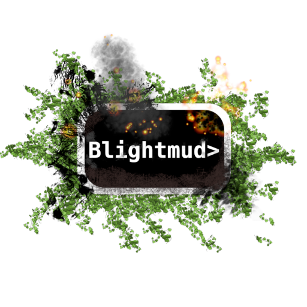
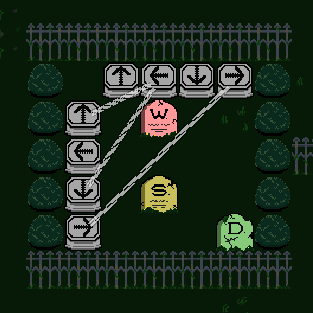
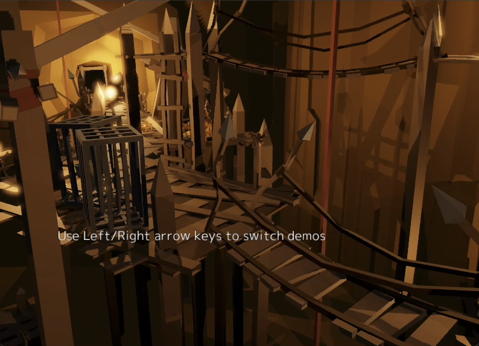

This Month in Rust GameDev #23 - June 2021
Welcome to the 23rd issue of the Rust GameDev Workgroup's monthly newsletter. Rust is a systems language pursuing the trifecta: safety, concurrency, and speed. These goals are well-aligned with game development. We hope to build an inviting ecosystem for anyone wishing to use Rust in their development process! Want to get involved? Join the Rust GameDev working group!
You can follow the newsletter creation process by watching the coordination issues. Want something mentioned in the next newsletter? Send us a pull request. Feel free to send PRs about your own projects!
- Game Updates
- Learning Material Updates
- Engine Updates
- Tooling Updates
- Library Updates
- Requests for Contribution
Rust GameDev Meetup

The sixth Rust Gamedev Meetup happened in June. You can watch the recording of the meetup here on Youtube. The meetups take place on the second Saturday every month via the Rust Gamedev Discord server, and are also streamed on Twitch. If you would like to show off what you've been working on in a future meetup, fill out this form.
Game Updates
taileater

taileater (itch.io, GitHub) is a open source puzzle game in which you eat your own tail to win.
The game is programmed in Rust using the Bevy engine.
Egregoria

Egregoria (GitHub, Discord) by @Uriopass is a simulation oriented city builder that tries to replicate modern society as well as possible.
It recently upgraded from a 2D top-down view to a 3D third-person camera as seen in the screenshot above.
Elevated roads and bridges are now possible, allowing to build complex highway interchanges.
{kind=link}
Some technical details around the renderer with more screenshots, along with an architectural overview of the project can be read in the 9th devlog.
Open Combat

Open Combat (/r/OpenCombatGame, Discord, Forum) is a real time tactical game directly inspired by Close Combat Series. The player takes control of soldier units and orders them to win the battles from a top down 2D view.
The project recently started with Rust language after a Python language proof of concept in 2017. More info is available at opencombat.bux.fr, and you can find a presentation video and a game making of video on YouTube.
Battleship.rs

Battleship.rs by Deepu is an open source Battleship game for the terminal built in Rust using the tui-rs crate.
The game uses different ship shapes, unlike the traditional vertical/horizontal shapes, and has multiple game rules to choose from. There are two difficulty levels as well. The game is supported in Linux, Mac and Docker.
If you have docker installed, you can play the game instantly by running
docker run --rm -it deepu105/battleship:main
The next iteration would be to support a WebAssembly version of the same.
Blightmud

Blightmud (Discord) is a mud client for the terminal inspired by tintin++ and tinyfugue allowing users to connect and get immersed in the worlds offered by text based online multi user dungeons known as muds.
The project was birthed in April of 2020 and has come a long way since. It now offers granular scripting access using lua, plugin handling, built in text-to-speech (via Speech dispatcher), split view scrolling, modern telnet protocols, and TLS connections to name a few.
The Hat Chooses the Wizard
Runs on real hardware!
The Hat Chooses the Wizard is a 2D platformer for the Game Boy Advance.
It was made for this year's Game Maker's Toolkit (GMTK) game jam with the theme joined together and came in the top 25% of over 5800 entries. The game plays over 12 levels with the core mechanic being to throw your hat and then accelerate towards it. You can play it on a web-based emulator embedded on the itch page.
The game is written in pure Rust and uses agb to interface with the hardware. The library is designed to allow you to write games without needing a detailed understanding of the hardware while still giving full access to all of its capabilities. It is under active development with plenty more features on the way.
You can find the source code for the game here and all feedback is welcome.
Themengi
Demonstration of natural language parser with temporary words and grammar.
Themengi (Discord, Twitter) is a puzzle adventure game where you learn an alien language, with completely unknown words and grammar, to navigate the world and find your way home.
This month the first devlog for Themengi was published, discussing its natural language parser using Head-Driven Phrase Structure Grammar, the choice to use Bevy, a texture upscaling technique for faithful pixel art rendering, and implementing an outline shader in the Bevy render pipeline.
Dango
Dango (GitHub) is a little multiplayer blob physics sandbox made by @ErnWong as a tribute to the Dango Daikazoku from Clannad. It was made using various libraries from the Rust community, including the Bevy game engine, the NPhysics physics engine, and the CrystalOrb networking library. To avoid the costs of running a server, Dango currently runs the server in the browser and generates a unique URL that lets other players to join using WebRTC.
FishGame

FishGame is a multiplayer brawler game made in macroquad.
FishGame started as a nakama-rs showcase, but now it's getting more life as an independent game. To make a transition from a tech demo to a real game, lots of playtesting and fine-tuning happened this month. Most noticeable improvements: a new physics system with throwable everything and a new zoom-to-fit camera system.
Hyper Farmer
The dubiously named Hyper Farmer was made for the GMTK Game Jam using the Bevy engine. For some reason, the player has to pick up all the hay from their fields using a giant laser slung between two tractors. Apart from the bevy_game_template, all the artwork, music, and code was made over about 24 hours. The game can be played in the browser, and native builds are available on github releases.
Way of Rhea

Way of Rhea is a picturesque puzzle platformer-without the platforming. Solve mind-bending color puzzles, unlock new areas of a vibrant hub world, and talk to NPCs to unravel the mysteries of a world you left behind!
Way of Rhea is being produced by @masonremaley. Latest Way of Rhea developments:
- Most biomes now have narrative arcs, experienced in part through the new dialogue system.
- @masonremaley published a blog post, When to Rewrite outlining how he views the rewrite vs improve tradeoff in the Way of Rhea engine.
- Controller support was added, controls glyphs shown in game automatically reflect the most recently used input device.
- Fixes a player reported bug where undo/redo resulted in a temporary slowdown due to a lack of communication with the sleep system.
- More puzzles!
Weegames

Weegames is a fast-paced minigame collection. The web version now has a counter which tells you how many of the 41 minigames you've played. Also, the game shows a newly-added loading screen while downloading the initial assets.
Note: These updates have not yet been rolled out to the downloadable Windows version.
Flesh
demo build
Flesh by @im_oab is a 2D-horizontal shmup game with hand-drawn animation and organic/fleshy theme. It is implemented using Tetra. This month, an internal demo build was released, with a development journal available on Google Drive.
Veloren
 Turns out the cave wasn't empty
Turns out the cave wasn't empty
Veloren is an open world, open-source voxel RPG inspired by Dwarf Fortress and Cube World.
In June, Veloren released 0.10. During the release party, some of the developers joined a voice call to stream the game and answer some questions about development. You can watch that stream here. A lot of metrics were recorded during the launch, and you can read about them in blog #124. At peak, 118 players were playing at the same time during the launch.
The plugins system received a tutorial about how to get started. Caves were overhauled with lots of new content. Veloren has officially moved fully over to wgpu, which you can read all about in blog #125. Work has been done on hot reloading for easier access of assets in game. Lots of new models were added to the game, and bosses in dungeons are being overhauled with more skills to diversify combat.
June's full weekly devlogs: "This Week In Veloren...": #123, #124, #125, #126.
Projectris
Projectris is like Tetris, but in 2D and 3D at the same time. As the 3D piece falls, you can manipulate it, but all that matters are the shadows it casts on the 2D game boards on either side, each of which is played independently.
While the full concept is already prototyped, there are still many features to implement before this is a real game: scoreboard, increasing fall speed, game over, JUICE.
@bonsairobo is not actively working on this, but is happy to accept PRs.
The Process
 Building the world, one voxel at a time
Building the world, one voxel at a time
The Process by @setzer22 is an upcoming game about factory building, process management, and carrot production, built with Rust using the Godot game engine!
In this month, the main focus has been towards the addition of a new terrain editor to speed up the creation of game levels. Terrain meshes are built using smooth voxels using the implementation in the building blocks crate.
This month has seen the following changes and improvements:
- The new terrain editor, with a minimalistic GUI built in Godot itself.
- A new island, fully made and procedurally textured with the new editor
- Implemented random factory maintenance events.
- Migration of several old GDScript code into Rust, using the ECS pattern, like the system for character movement.
Discussions: /r/rust_gamedev
Not Snake
Not Snake is a snake game in 3D with a twist: you're the snake's food!
Check out the web version on the game's itch.io page.
Space:CAKES
Space:CAKES is a sliding, repeating and funky puzzler about reaching the delicious cupcake across your spaceship. Made for the GMTK Game Jam.
You play as a cute alien, who has a limited amount of steps. He turns green when he can walk freely, but once he runs out of steps, he becomes red and can only push on crates. Luckily, some crates contain +1 or +2 steps for him, as long as he can push one into a laser.
sokoban-sokoban

sokoban-sokoban (source code) by @trouv is a sokoban-like puzzle game made in 48 hours for the GMTK 2021 game jam.
Somebody messed up the graveyard! You can fix it, but your movements are joined together. More specifically, the location of the gravestones in the level's movement table determines which movements are joined to which. When two movements are "joined", the associated input performs BOTH movements!
Engine Updates
thRustEngine - with simple shooter game demo

This is a simple descent/quake style shooter written to demo thRustEngine. The current repo is a placeholder.
It loads wavefront.OBJ, and Quake1/Quake3 BSP worlds, converted to an internal format for collision and rendering. It uses clustered forward+ dynamic lighting and normal maps, and loads textures asynchronously.
The future direction depends on community feedback (a public shared crate is planned). The current intention is to find a few close collaborators.
Demo videos: free quake map demo, custom map demo.
Discussions: /r/rust_gamedev
rg3d

rg3d (Discord, Twitter) is a game engine that aims to be easy to use and provide a large set of out-of-box features. Some of the recent engine updates:
- Initial support for custom rendering techniques.
- Word-based wrapping for FormattedText.
- Ability to specify material search options when loading a model.
- Render sky box in a single draw call.
- Fix for resource management issues.
- Fix for FBX loader in case of invalid mappings.
- Fix for triangulator.
- Physics for terrains.
- Heightfield visualization.
- Ability to pause sound contexts.
editableflag for text boxes.- Various bug fixes and small improvements.
rusty-editor updates:
- Ability to add/remove/edit sound sources
- Model import dialog window.
- Embed and fonts icons in the binary, which makes package distribution easier.
.deband.rpmpackages for Linux- Camera fix + ability to preview scene cameras
- Icons for "shapeless" (lights, sound sources) objects in the scene.
Learning Material Updates
A Trig-less Line of Sight Algorithm for 2D Games

@basstabs published a tutorial that explains how to write a line of sight algorithm for 2D games in Rust without using trigonometry or square roots. It includes vector diagrams and typeset math to explain the ideas behind each stage of the algorithm, source code for each step, tests to verify the accuracy of the methods, and suggestions for further improvements. Additionally, the repository contains benchmarks and a sample application written in ggez.
Discussions: /r/rust_gamedev
When to Rewrite

@masonremaley wrote a blog post offering an opinion on rewrites vs incremental migrations informed by his work on the Way of Rhea engine.
A working system is a valuable asset. It works. It lets you test new ideas cheaply. Don't take that for granted.
Discussions: /r/rust_gamedev
Writing the Bevy Retro Renderer
@katharostech published an article about their experiences writing the render for Bevy Retro. They walk through the different strategies and APIs they tried and explain why they wrote their own renderer in the first place.
Game Development with Rust
@thebracket published an article on the current state of Rust Game Development. It covers a few games and engines made in Rust, links to some resources for integrating Rust into major game engines (Unity and Unreal). The article then links to some tutorials and resources for learning Rust game development at different skill and experience levels.
How to make plugins system with Rust and WebAssembly
@zakarumych published an article about their experience creating a fully safe plugins system using plugins compiled to WebAssembly. It provides reasoning for choosing WASM in specific scenario and contains strategies for interacting with WASM modules embedded into an application, including dealing with dynamic memory of the module, string and array operations, function pointers, etc.
Getting Started with ECS using Planck ECS

planck_ecs by @jojolepro is a minimalist and safe ECS library.
This month @jojolepro released a tutorial that describes how to use ECSes in general and planck_ecs specifically.
Tooling Updates
Sugarcubes

Sugarcubes by @henryksloan is a tool for designing and testing automata.
Sugarcubes allows for easy creation of models used in the theory of computing. It is designed to be a more intuitive and useful alternative to JFLAP, the most popular tool for designing automata and formal languages. It uses macroquad for the editor, and egui for the toolbars. Sugarcubes currently features a fully functional finite automaton editor and simulator, and many other models, editing features and simulations are planned.
You can check out a live WASM demo here, or the source code on Github.
Rusty Slider
 Supports syntax highlighting of code blocks
Supports syntax highlighting of code blocks
Rusty Slider by @ollej is a markdown slideshow viewer written with macroquad.
The game engine Macroquad can be used for more than just games. It’s also a great way to quickly build multi-platform tools with graphics.
It’s possible to write presentations in plain text using Markdown. The application runs natively on all major platforms, and can also be used within a browser.
- Supports headers, bold/italic, blockquotes, lists, and code blocks with syntax highlighting.
- Automatically change slides.
- Themes separated from content.
- Toggle a CRT shader.
The latest feature added was to execute bash code blocks. The output of the execution will be shown below the code block. This is meant to be used for demo purposes, to show actual results of commands.
Graphite
 Geometric cherry tree artwork by BillyDM, winner of last month's first
Graphite art contest
Geometric cherry tree artwork by BillyDM, winner of last month's first
Graphite art contest
Graphite (GitHub, Discord, Twitter) is an in-development vector and raster graphics editor built on a non-destructive node-based workflow.
Since last newsletter, the editor has received the ability to select layers via the layer panel and by clicking or dragging a box selection in the viewport. Selected layers can be deleted, duplicated, and copy/pasted.
It is now possible to create, edit, and close multiple documents in their own editor tabs. Additional frontend cleanup and polish has also improved many parts of the editor experience.
Lastly, support for transforms was added to the layers and document, paving the way for moving/scaling/rotating layers and the whole document within the viewport.
Try it right now in your browser. Graphite is making rapid progress towards becoming a non-destructive, procedural graphics editor suitable of replacing traditional 2D DCC applications. Please join the Discord - and consider asking for a tour of the code and how you can help!
texture_generator v0.5
An depth image example
texture_generator by Orchaldir is a library to generate textures, and a library to use those textures to render tilemaps.
This month the v0.5 version was released. Some of the updates:
- The editor was switched to Iced.
- Layered textures.
- Door handles.
- More options for depth calculation: depth gradient along X or Y and barrel shape.
- Furniture can now have a fixed size or fill the selected area
Discussions: /r/rust_gamedev
Library Updates
backroll-rs and GGRS
backroll-rs (Discord, crates.io) by @james7132 and GGRS by @g_schup are pure Rust implementations of the GGPO rollback networking library.
Evo Moment 37: Only offline or with rollback!
Rollback networking is a peer-to-peer network technique designed to hide network latency in fast-paced games with precise inputs. Traditional techniques account for network transmission time by delaying the game execution, resulting in a sluggish game-feel. Rollback uses input prediction and speculative execution instead. Upon receiving inputs from remote clients, resimulation of incorrect game states occurs. This allows for gameplay that "feels just like offline". The open source standard for rollback netcode GGPO is used in successful games like Skullgirls, Guilty Gear XX Accent Core +R or Fightcade. For further explanation about rollback, click here.
Two projects in Rust were independently created to provide a working implementation as well as helpful resources for developers. backroll-rs features an added abstraction for the transportation layer and also provides a bevy plugin, bevy-backroll. GGRS replaces the C-style callback API of GGPO with a simpler, more understandable control flow. The authors of both libraries recommend backroll-rs for development, as it is currently more actively collaborated on. GGRS is recommended as a learning resource and entry point, with a plethora of internal documentation and explanation.
The main requirement to make use of both presented libraries is determinism in your game execution. Resimulation requires that the result of progressing the game state depending on the given inputs yield the exact same results every time. Additionally, you need to be able to load, save and progress your gamestate without rendering the outcome.
If you are interested in integrating rollback networking into your game or just want to chat with other rollback developers (not limited to Rust), check out the GGPO Developers Discord!
CrystalOrb
Interactive demo that uses the Rapier physics engine.
CrystalOrb by @ErnWong is a new networking library that aims to help fast-paced client-server games synchronize their game state across multiple clients. Just like backroll-rs and GGRS, each CrystalOrb client predicts the next game state without waiting for other remote players' inputs to arrive. Unlike backroll-rs's and GGRS's peer-to-peer approach which only send input data between its peers, CrystalOrb relies on having a server to send authoritative snapshots of the entire game state to each client. In response, each client unconditionally rolls-back to that snapshot. Although this may lead to higher network and memory usage, it means that CrystalOrb clients can join and leave at any time, and games that cannot guarantee full-determinism can still work with CrystalOrb.
This library was written as a learning exercise for the author, and as such, the author warns that this library may not be suitable for serious games.
There is an interactive demo of CrystalOrb that features the Rapier physics engine.
glutin (and winit)
This cursor may be waiting in vain, but your patience shall be rewarded.
glutin is a low-level library for OpenGL context creation, written in pure Rust. glutin uses and re-exports winit, which handles window creation and management, as well as various input devices.
This month, glutin 0.27.0 was released, which makes glutin use the latest version of winit (0.25.0), which was released around a month prior to glutin 0.27.0. Usually, we try to keep glutin synced with winit, but we couldn't quite manage to do it this time since the person who'd usually take responsibility for releasing a new version of glutin was unavailable, and no-one had the role of "back-up releaser". @maroider has offered to fill this role for now.
The upgrade to winit 0.25.0 brings with it a slew of bugfixes, a couple of new features, and a single breaking change to WindowBuilderExtMacOS::with_activation_policy, which has been replaced by EventLoopExtMacOS::set_activation_policy. For a full list of changes, refer to winit's changelog.
The departure and disappearance of a couple of maintainers has left winit in need of someone knowledgeable with X11 in order to review pull requests and address various issues. Other backends also need some more love, but X11 is the most pressing.
The project could also use more helping hands in general, in anything from mapping out platform differences and triaging bugs to reviewing PRs and tackling outstanding issues. The current maintainers would also be happy to have you even if all you do is answer platform-specific questions for them. If you're interested, come say hi in their matrix channel or on any of the other services bridged with matrix.
egui

egui by @emilk is an easy-to-use immediate mode GUI library in pure Rust.
This month version 0.13 of egui was released, with a new visual style, resizable panels, more powerful plots, and more.
You can try out egui in the online demo.
Discussions: /r/rust
erupt

erupt by @Friz64 provides bindings to the Vulkan API.
Since being last mentioned in the newsletter shortly after its release, erupt has undergone significant development. The generator, erupt's heart, has been rewritten from scratch with the aim to improve maintainability. On top of that, many bugs were fixed, the function loader was rewritten and usability was improved while always keeping up to date with the latest Vulkan Headers as best as possible.
The ecosystem has gained traction, with many people using the crate for their projects. Pure Rust Vulkan allocators with support for erupt have been released.
smooth-bevy-cameras
smooth-bevy-cameras by @bonsairobo is a small plugin for Bevy Engine that
makes it simple to have exponentially smoothed camera transforms in your game.
Just add a new bundle to your camera entity,
and rather than updating a Transform directly, you can just update the eye
and target values of a LookTransform, which will be automatically
synchronized to the Transform.
Several example controllers are provided as well:
- First Person
- Orbit
- Unreal Engine Viewport
wgpu family re-union
wgpu is a WebGPU implementation in Rust. It is safe, efficient, and portable: it can target both native and the Web.
Family reunion is by far the biggest change in wgpu project since the inception. First, the Rust API of wgpu-rs was moved to the main wgpu repository. Second, the whole base was relicensed under MIT/Apache2.
gfx-hal - the Vulkan Portability-like graphics API abstraction - was detached from the project. Instead, wgpu got its own in-house unsafe abstraction called "wgpu-hal" developed within the wgpu repository.
The team released wgpu-0.9 right before this transition, to give the new graphics infrastructure more time to take shape. At the time of writing, supported backends on the new HAL include Vulkan, Metal, and OpenGL ES3.
Finally, the testing infrastructure received a major upgrade. It started rendering the examples on the available adapters and comparing the results with reference images. This includes automatic testing using software adapters on CI.
rafx
 A scene exported via blender with animated camera motion, watch the demo on youtube!
Rafx is a multi-backend renderer that optionally integrates with the distill asset pipeline.
This month, the asset pipeline received almost all the attention. A custom
blender add-on was prototyped, and several project layouts were tested to
decide on "best practices" to recommend for anyone that wants to use rafx
with 3d assets.
Using a custom add-on will enable a workflow that supports large scenes with many assets. The add-on currently exports textures, materials, meshes, models (a collection of meshes of varying LOD levels), and prefabs (a list of lights, meshes, etc. to place in the world).
Some commercial art packs with varying art styles and complexity have been ported to this pipeline, and one of them was loaded into the demo. A fly-through camera was animated and exported out as json to demonstrate the scene.
After prototyping is complete, details and lessons learned will be shared in hopes that it will be helpful to other projects in the rust community, even if they do not use rafx directly.
egui-tetra
egui-tetra (GitHub) by @tesselode is a library that integrates egui, an immediate mode GUI library, with Tetra, a 2D game framework.
egui-tetra provides helpers for integrating egui with Tetra's event loop and rendering the GUI.
Discussions: /r/rust
bevy_midi

bevy_midi by @BlackPhlox is a new bevy plugin that uses midir to interact with the bevy game engine.
It started out with bevy_osc as a proof-of-concept interfacing with nannou_osc and using other osc software to communicate with bevy. Soon, realizing that nannou_osc is not that different from how you interface with midi, bevy_midi was born.
Here is one of the examples which you can use a midi controller to play piano with demo_audio.
The plugin is still in its infancy. So it still has some performance issues, so any feedback and contributions are highly appreciated.
bevy_config_cam

bevy_config_cam by @BlackPhlox is an all-in-one purpose camera/player controller for bevy.
With focus on plug-and-play, flexibility and ease of use, this bevy plugin is for anyone who is prototyping in 3D and doesn't want the hassle of programming a player-controller from scratch. Instantly switch between camera modes such as Tracking to Topdown, Follow Behind, FPS and Free and more.
The plugin is very new. So any feedback and contributions are highly appreciated.
assets_manager
assets_manager provides easy file loading and caching, with a focus on hot-reloading.
In June was released version 0.5.0, which came with many new features.
assets_manager has now built-in support for loading sounds and images, and
Zip archive were added as a new source to load assets from. Additionally, the
API around directories was reworked to be more powerful, and performances were
improved a bit.
Requests for Contribution
- winit's "difficulty: easy" issues.
- Backroll-rs, a new networking library.
- Embark's open issues (embark.rs).
- wgpu-rs's "help wanted" issues.
- luminance's "low hanging fruit" issues.
- ggez's "good first issue" issues.
- Veloren's "beginner" issues.
- Amethyst's "good first issue" issues.
- A/B Street's "good first issue" issues.
- Mun's "good first issue" issues.
- SIMple Mechanic's good first issues.
- Bevy's "good first issue" issues.
That's all news for today, thanks for reading!
Want something mentioned in the next newsletter? Send us a pull request.
Also, subscribe to @rust_gamedev on Twitter or /r/rust_gamedev subreddit if you want to receive fresh news!
Discuss this post on: /r/rust_gamedev, Twitter, Discord.